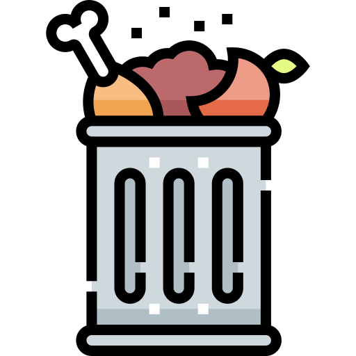

음식물 쓰레기 분리수거 안내

음식물 쓰레기 FOOD WASTE
#과일껍질 #음식물조각
재활용: 불가능
분류: 음식물쓰레기
악취: 강함
분리배출 방법
- 음식물 쓰레기는 깨끗이 비우고, 비닐봉지 등에 담아서 분리배출해주세요.
- 쓰레기통에 버리기 전에 재활용이 가능한 부분은 따로 분리해주세요.
유의할 점
- 음식물 쓰레기는 재활용이 불가능하며, 자연분해되는 시간이 오래 걸리기 때문에 환경오염에 주의해야 합니다.
- 음식물 쓰레기는 따로 분리하여 처리함으로써 자원 재활용과 환경보호에 기여할 수 있습니다.